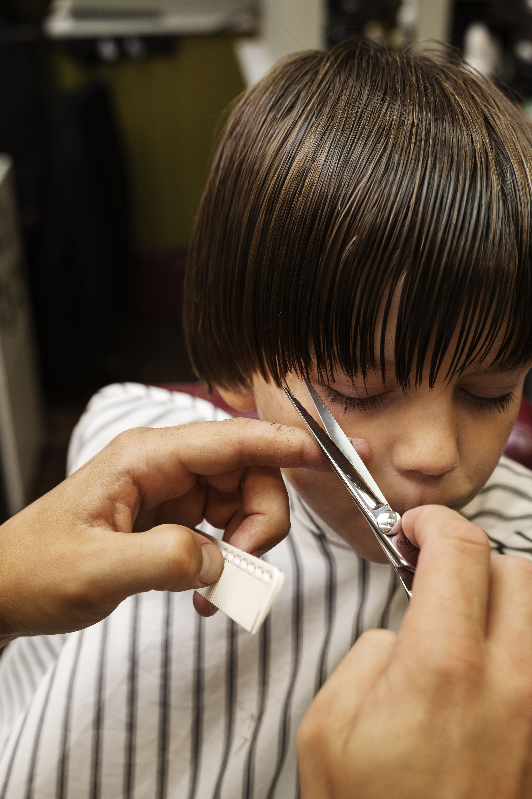

Barba
R$40
Cabelo na Tesoura
R$50

Corte na Máquina
R$30

Cabelo e Barba
R$70

Corte para Criança
R$50
Limpeza de Pele
R$30

Lavagem Capilar
R$45
Desde nossa fundação, nos dedicamos a oferecer mais do que cortes impecáveis e barbas bem-feitas. Aqui, cada visita é uma experiência que valoriza tradição, estilo e cuidado pessoal. Com uma equipe de barbeiros apaixonados e especializados, estamos comprometidos em proporcionar não apenas um serviço de qualidade, mas também um ambiente acolhedor onde cada cliente se sente em casa. Descubra o que nos diferencia e transforme sua visita à barbearia em um momento de relaxamento e estilo.
R$40
R$50
R$30
R$70
R$50
R$30
R$45
O corte de cabelo "buzzed" é um estilo muito curto e uniforme, geralmente feito com uma máquina de cortar cabelo. É fácil de manter e ideal para quem prefere um visual prático e limpo. Variações incluem adição de desenhos, fades (desvanecimentos) e taper (afunilamento nas laterais). É popular entre homens de todas as idades por sua simplicidade e versatilidade.

O corte Mid Fade é uma variação do fade que começa entre a têmpora e a orelha, criando uma transição suave e graduada entre os comprimentos mais curtos e mais longos do cabelo. Este estilo oferece um equilíbrio entre um corte de cabelo baixo e alto, proporcionando um visual moderno e bem definido.
O Mullet é um estilo de cabelo icônico dos anos 80 que apresenta o cabelo mais curto nas laterais e na frente, enquanto a parte de trás é deixada mais longa. Este corte é frequentemente descrito como "negócio na frente, festa atrás" e tem ganhado popularidade novamente nos últimos anos devido à sua aparência ousada e nostálgica.

O Undercut é um corte de cabelo em que as laterais e a parte de trás da cabeça são raspadas ou cortadas bem curtas, enquanto o topo é deixado significativamente mais longo. Este estilo versátil pode ser usado com diversos tipos de cabelo e comprimentos no topo, permitindo uma ampla variedade de looks, desde os clássicos aos mais modernos e ousados.
O corte Fluffy Edgar é uma variação moderna do tradicional corte Edgar. Este estilo é caracterizado por um corte em linha reta na testa, com as laterais e a parte de trás cortadas curtas, enquanto o topo é deixado mais cheio e texturizado. A versão "fluffy" do Edgar adiciona volume e movimento ao topo, criando um visual mais suave e descontraído.